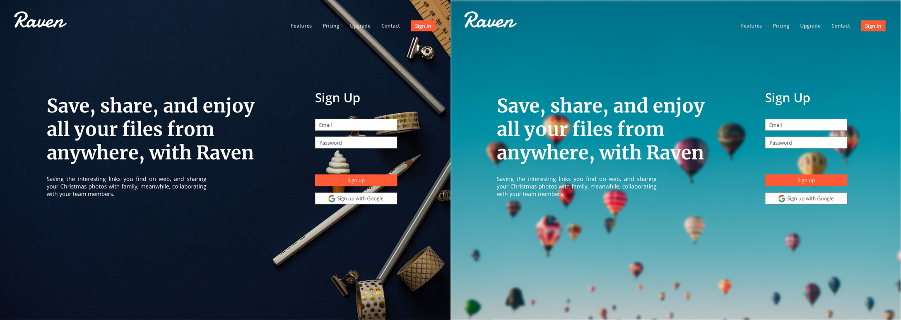
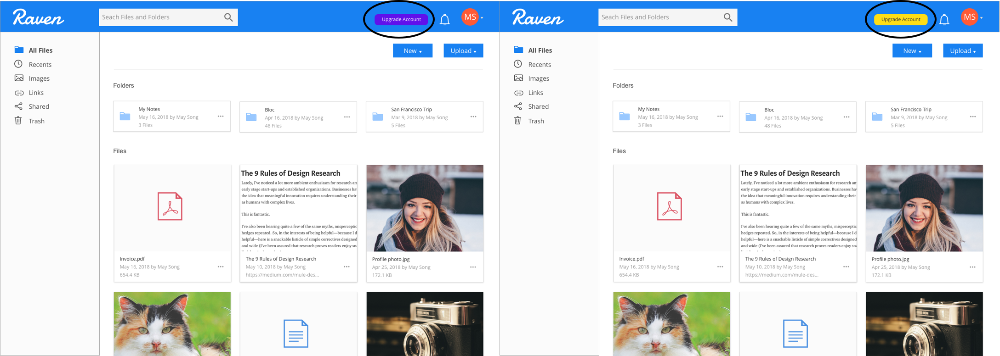
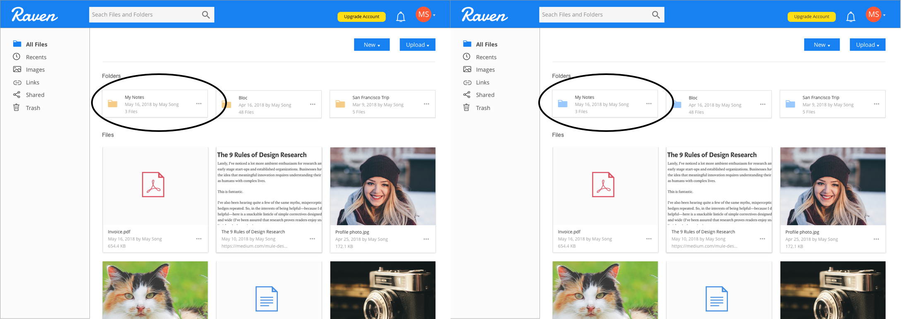
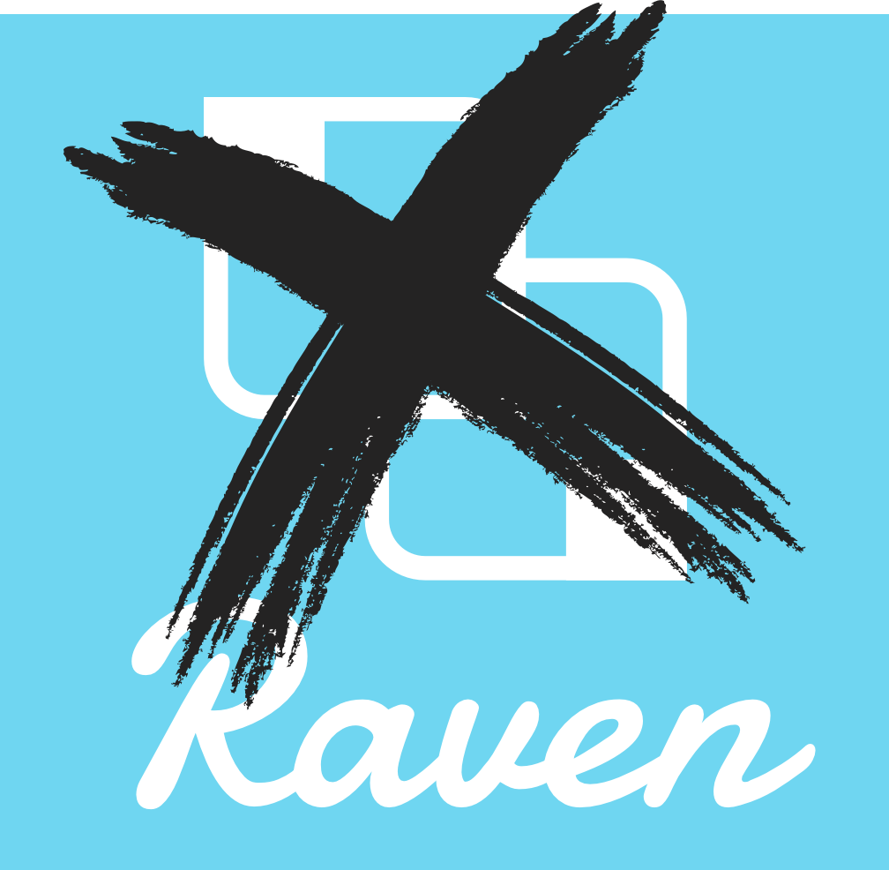
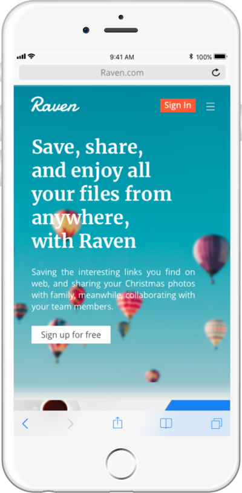
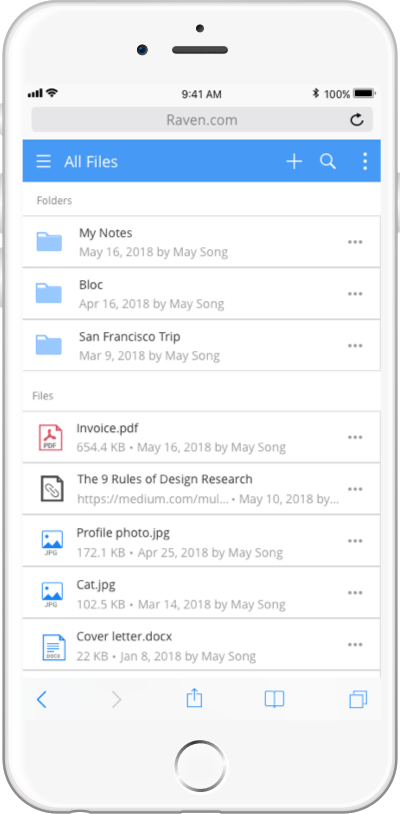
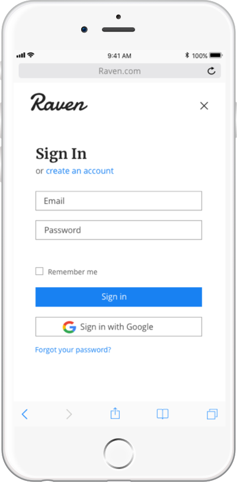
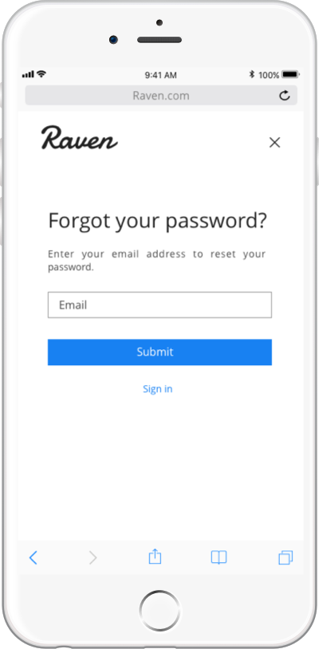

User Testing, First Round
I conducted three usability tests of my low-fidelity mockups. My goal was to direct the testers to provide feedback about the overall user experience and how easy or difficult it is to the following tasks:
-
Signing up for an account.
-
Adding a piece of content.
-
Organizing a piece of content.
Based on the feedback, I identified several items could be improved and some other items were approved by users.
-
Limited text using is approved by users. The homepage is concise and clean, but need some enrichment, like more features, videos, and user testimonials.
-
Sign up process is smooth. No popping up window is more convenience and eye-catching, while sign in button would better be enlarged.
-
Keeping the design less distractive in order to help users complete their work efficiently.
-
Users showed the proper images they thought for the homepage. All images provide a professional working feeling, like a laptop, a cup of coffee on a desk, a notebook and a pencil, etc.
Preference Testing
I conducted 3 preference tests on Usability Hub to see wether one design favored the other.

Between the two homepage design, 40% participants chose the dark color background and 60% chose the light color. The main reasons for choosing dark color are: This background looks more professional; The contrast and readability are better; It is concise and clean, which is a better match for a cloud storage website. The reasons people prefer the light color image as the background are: It’s vivid and fresh; It is trendy and more consistent with the rest color of the homepage; The balloons express a feeling of vitality and exploration. My original design is the light color with balloons. I’d like to keep it for a better consistency and expression.

I have created two colors for “update my account” button on the dashboard. Most people (80%) prefer the yellow button. Both of the colors are the accent colors, but with a blue background, yellow gives better contrast, and would easily draw users’ attention. As a result, I would change my original purple button to yellow.

Between the two types of folder icon, I got a draw). The normal yellow kind of folder is a standard folder design. Participants state that it is easily acceptable. They have been seeing this folder everywhere. While the bluish folder is not that classical but trendy and more marked. Users like the folder on the blue theme. I personally prefer the blue folder, since the theme consistency is important.
Challenge
The challenge I ran into was how to assemble the logo and wordmark together on Raven’s website. The combination of the logo and wordmark was not balanced, and there was not enough space for both on the top left corner. The wordmark had provided the sharp and intelligent feeling of this product with the Damion typeface. While I was not that satisfied with the logo. If given more time, I would have refined the logo design and polished it. It was not professionally designed. So I decided not to use the logo on my product, and only to keep the wordmark. It would be tested later.

Clickable Prototype & User Testing, Round 2
After the user testing and wireframe mockups, I created the high fidelity mockups followed the style guide, and another clickable prototype with InVision.
I conducted 3 usability tests and received the final testing results. Users agree with that a cloud storage product would be better have a minimal and professional design. Limited text using is approved by users. The homepage is concise and clean.
The colors are compatible. Dodger blue as a brand primary color successfully delivers the professional and creative spirit. Some enrichment is necessary, like user testimonials and footer, which I have updated in the finishing touches.
Logo typeface is approved by users, while one user states the font size of this logo is small for the desktop screen, compared with the heading next to it. The balance between logo and content is worth to think over. Dashboard layout design is argued. Some users like the large thumbnails, but others argue that they are too large, and it could be better if put 4 images/previews in one row.
The mobile screens sign in, sign up and forget password is plain and clean. One user prefers to add more details. However, we’d like to keep the page simple in order to draw users’ attention to the sign in/ sign up process. Users would like to see organized and professional pages from a cloud storage product and to achieve their goals with effective and minimal working.



